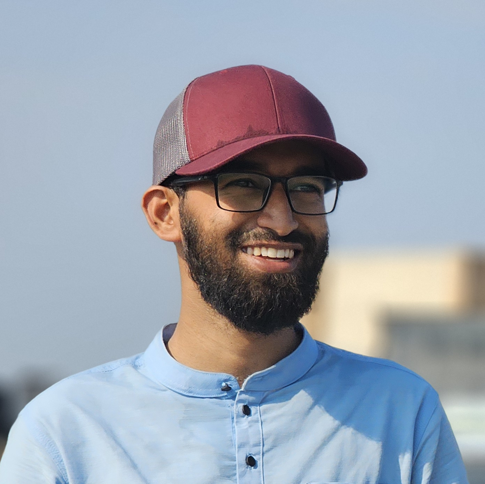

Hi! I am Mahmud Abdul Aziz Rohan
Energy Engineer | Problem Solver | Computer Science Enthusiast

I was born in Dhaka and spent my early childhood in Bhola due to my father's posting at Bhola Govt. College as a professor of botany. Currently, I permanently reside in Dhaka. I moved temporarily to Khulna to pursue my undergraduate studies at KUET, which has been a truly transformative experience for me. The independence of university life taught me to take responsibility for my own actions and fulfill them diligently. I have faced many struggles throughout my undergraduate journey and am still overcoming them one by one. For this, I cannot thank Allah, and secondly my wife, enough.
During my undergraduate life, I gained experience in many theoretical and practical engineering topics. My favorite among them is engineering thermodynamics, and I love analyzing thermodynamic systems. I also completed a short industrial training program at a power plant as a requirement of our course syllabus. Throughout this period, I have worked with various engineering software packages, such as CAD (SolidWorks, FreeCAD), CFD (Ansys Fluent, OpenFOAM), DesignBuilder, MATLAB, LaTeX, etc.
I am a husband and the father of a son, and I am incredibly proud of my family. In my free time, I love playing football and have a passion for running. As a hobby, I enjoy solving the Rubik's Cube in my leisure time, although I have not been able to dedicate much time to it lately. Additionally, my love for computers has allowed me to explore various topics in computer science. I have solved numerous programming exercises and problems on online judges, as I love learning about data structures and algorithms. Currently, I am learning web development.